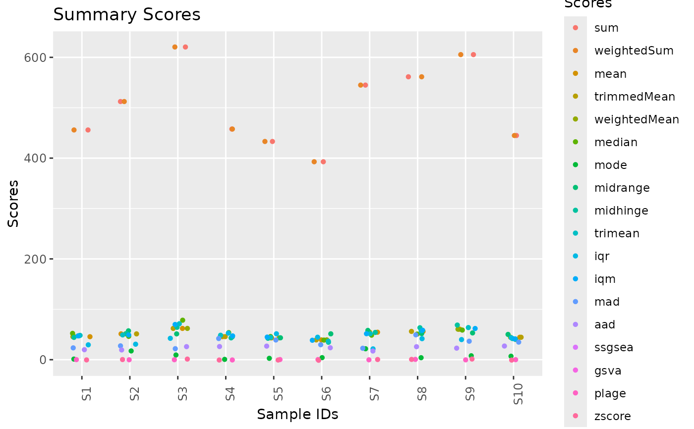

This function generates a
ggplot object.
scatterplotSigScores uses the internal function
ggPlot which contains different function
calls to ggplot2 functions in order to create a
pre-defined plot.
Usage
scatterplotSigScores(
data,
scores = NULL,
runs = NULL,
add.points = T,
point.shape = 16,
point.jitter.w = 0.2,
point.jitter.h = NULL,
labs.title = "Summary Scores",
labs.x = "Sample IDs",
labs.y = "Scores",
labs.col = "Summary\nScores",
axis.text.x.angle = 90,
axis.text.x.size = 9,
axis.text.y.angle = 0,
axis.text.y.size = 9,
...
)Arguments
- data
data frame, output of
computeSigScores- scores
(optional) character vector, indicating the summary score(s) to plot from
data- runs
(optional) numeric vector, indicating the repeats to plot from
data- add.points
logical, whether to add the computed scores of the individual summary measures as points in the plot
- point.shape
the shape to use to plot the scores. It can take five types of values:
An integer in
[0, 25]The name of the shape
A single character, used as a plotting symbol
A . to draw the smallest rectangle that is visible, usually 1 pixel
An
NA, to draw nothing
See
vignette("ggplot2-specs")for further details- point.jitter.w, point.jitter.h
Amount of vertical and horizontal jitter. The jitter is added in both positive and negative directions, so the total spread is twice the value specified here. See
position_jitterfor further details- labs.title
The text for the title
- labs.x
The title of the x axis
- labs.y
The title of the y axis
- labs.col
The title of the legend
- axis.text.x.angle, axis.text.y.angle
Specify the x and y axis tick labels angles (in
[0, 360]) Seeelement_textfor further details- axis.text.x.size, axis.text.y.size
Specify the x and y axis tick labels size in pts. See
element_textfor further details- ...
further arguments to
ggPlot
Examples
#Set seed for reproducibility
set.seed(seed = 5381L)
#Define row/col size
n = 10
#Create input matrix
x = matrix(
data = stats::runif(n = n*n, min = 0, max = 100),
nrow = n,
ncol = n,
dimnames = list(
paste0("g",seq(n)),
paste0("S",seq(n))
)
)
#Compute Summary Scores
x = computeSigScores(
x = x,
i = rownames(x)
)
#Plot scores
scatterplotSigScores(data = x)
#> Warning: Removed 20 rows containing missing values or values outside the scale range
#> (`geom_point()`).

#Plot scatter plots per summary score
scatterplotSigScores(
data = x,
scores = c("mean", "median"),
facet.rows = "summaryScore"
)